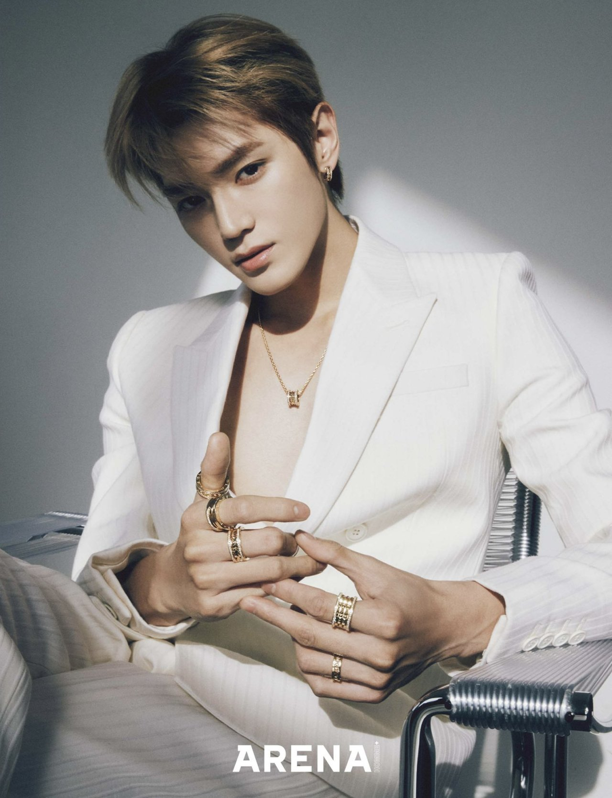
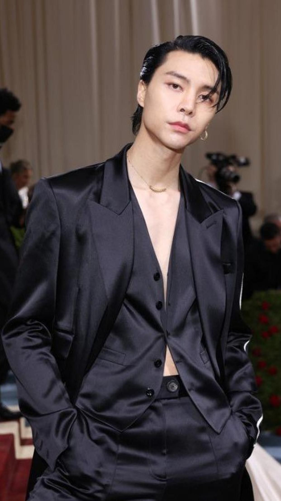
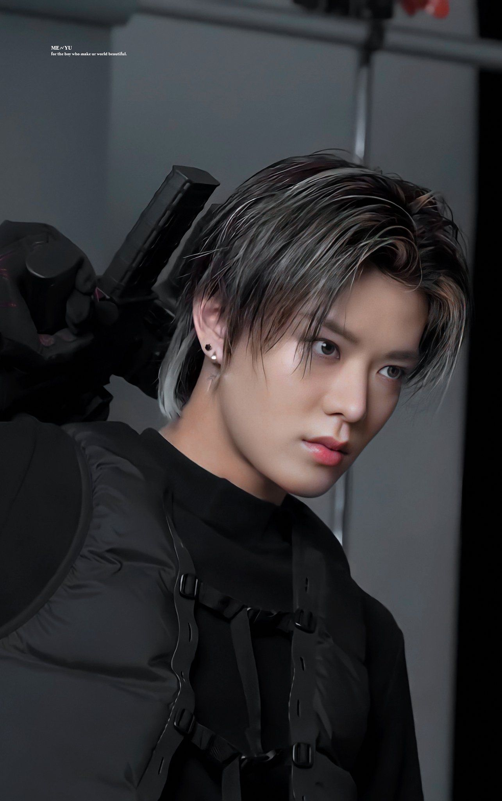
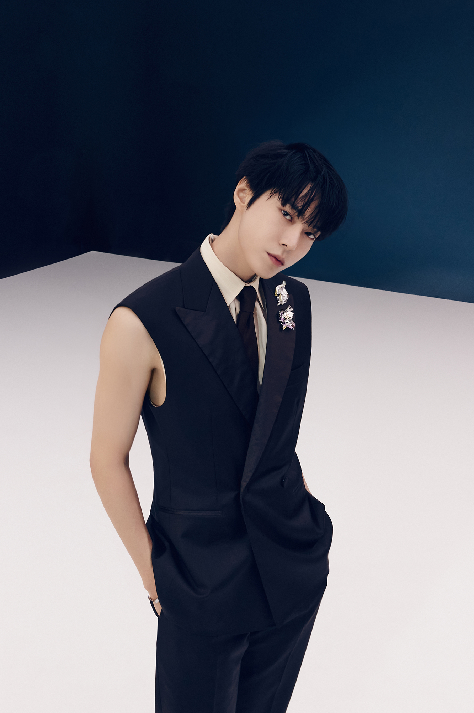
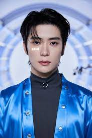
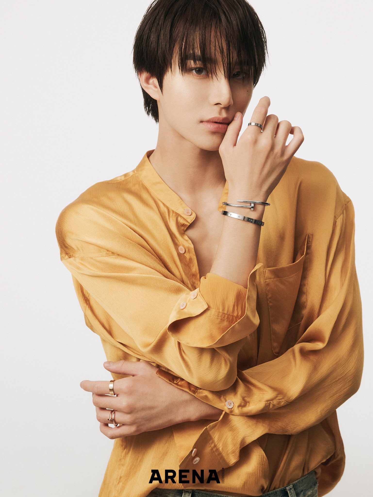
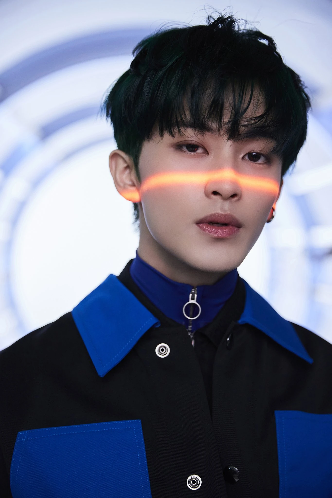
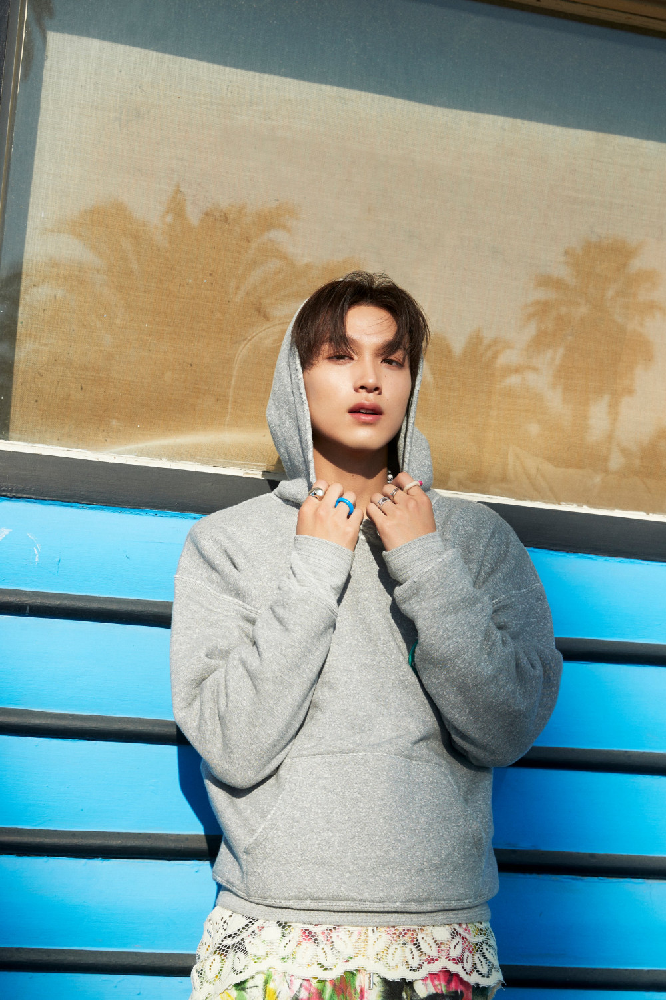

NCT 127
Debut: 2016

Taeyoun
- Korean rapper, singer, songwriter, and dancer.
- Birthday: July 1, 1995
- 27 years old
- Full name Lee Tae Yong
- Height: 5'9"
- Zodiac sign: Cancer
- Nationality: South Korean
-
Taeyong is a South Korean rapper, singer, songwriter, and dancer
- He is the leader of NCT under SM Entertainment
-
He debuted in NCT's first sub-unit NCT U and later became leader
in NCT 127
- He is also part of other groups including SuperM

Johnny Suh
- My bias
- American rapper, singer, dancer and songwriter.
- Birthday: February 9, 1995
- 28 years old
- Height: 6'1"
- Zodiac sign: Aquarius
- Korean name: Suh Young-ho
- Johnny is an American rapper, born in Chicago
- He is one of the rappers and sub-vocalists of NCT 127
-
He was accepted to SM Entertainment through SM global auditors
in Chicago
- He is also part of sub-unit NCT U

Taeil
- Main vocalist of NCT 127
- Birthday: June 14, 1994
- 28 years old
- Height: 5'7"
- Full name Moon Tae-il
- Taeil is a South Korean singer
- He is a member in NCT and its sub-units NCT U an NCT 127
- He is the main vocalist
-
After deciding to become a college student he quickly changed
his mind and became a singer instead

Yuta
- Japanese rapper and actor
- Birthday: October 26, 1995
- 28 years old
- Zodiac sign: Scorpio
- Height: 5'9"
- Full name Yuta Nakamoto
-
Yuta is a Japanese singer, actor, and radio host based in South
Korea
-
He first debuted in the group NCT and later in its sub-units NCT
127 and NCT U
- He was born in Kadoma, Osaka, Japan
- He is also the lead dancer

Doyoung
- Korean singer, actor and host
- Birthday: February 1,1996
- 27 years old
- Zodiac sign: Aquarius
- Height: 5'10"
- Full name Kim Dong-young
- Doyoung is a South Korean singer, actor, and host
- He is part of the groups NCT, NCT U and NCT 127
- He is the main vocalist of both NCT U and NCT 127

Jaehyun
- Korean rapper
- Birthday: February 14, 1997
- 26 years old
- Zodiac sign: Aquarius
- Height: 5'11"
- Full name Jeong Yun-o
-
Jaehyun is a South Korean singere, rapper, television host and
actor
-
He is one of the main vocalists and lead dancers of NCT U and a
main vocalist, lead dancer, and sub rapper of NCT 127

Jungwoo
- Korean singer
- Birthday: February 19, 1998
- 25 years old
- Zodiac sign: Pisces
- Height: 5'11"
- Full name Kim Jung-woo
- Jungwoo is a South Korean singer and dancer
-
He is the main vocalist and the lead dancer of NCT U and the
lead vocalist and lead dancer of NCT 127

Mark Lee
- Canadian rapper, singer, dancer and songwriter
- Birthday: August 2,1999
- He was born in Toronto, Ontario, Canada
- Zodiac sign: Leo
- 23 years old
- Height: 5'9"
-
Mark is Canadian rapper, singer, dancer and songwriter based in
South Korea
-
He is a member of NCT and its sub-units NCT 127 and NCT Dream as
well as the South Korean supergroup SuperM
-
He is the main rapper, main dancer and the sub-vocalist in each
group

Haechan
- Korean singer
- Birthday: June 6, 2000
- 22 years old
- Zodiac sign: Gemini
- Height: 5'9"
- Haechan is a South Korean singer and dancer
-
He is the main vocalist and the lead dancer of NCT 127, NCT
DREAM and NCT U